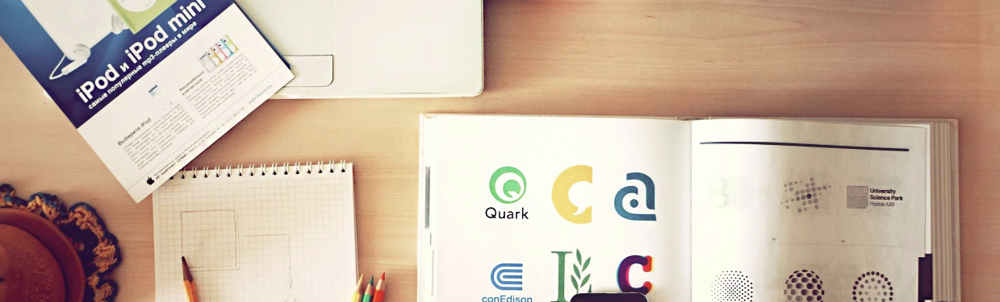

TEKNOLOGJIA
TEKNOLOGJIA
||| Teknologjia |||
||| Çka është Teknologjia? |||
||| Teknologjia Atëherë |||
||| Teknologjia Sot |||
||| Teknologjia në të ardhmen... |||
||| Ndryshimet e Teknologjisë |||

Disa fjalë kuptimshkurtër të Teknologjisë
IT
-Information Technology-Teknologji Informative
Tech
-Technical-Teknik
Tik
-Teknologjia informative
6 Llojet e Teknologjisë që duhet të dini
- Teknologjia e Informacionit.
- Teknologjia e Arsimit.
- Teknologji Mjekësore.
- Teknologjia e Komunikimit.
- Teknologjia e Biznesit.
- Teknologji Ndihmuese.